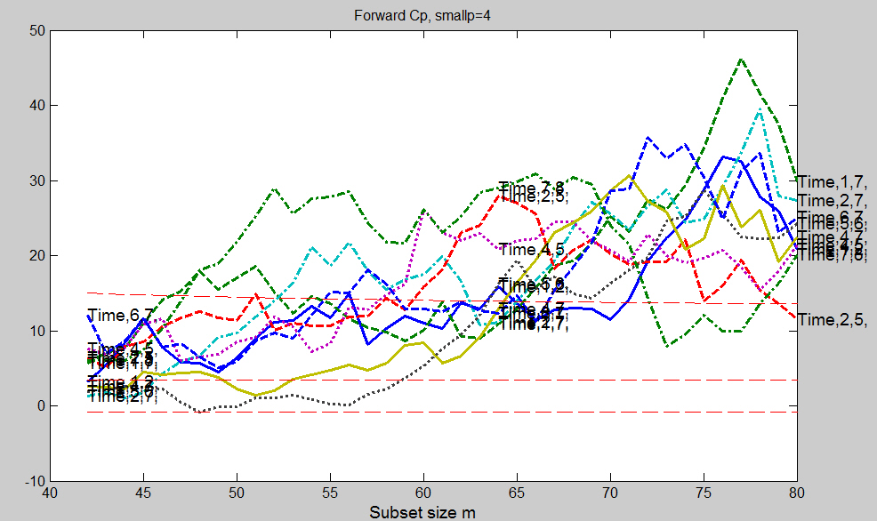
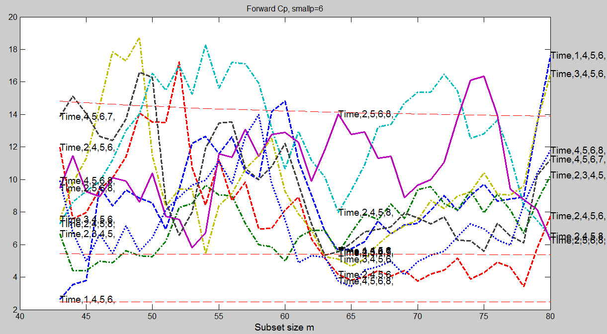
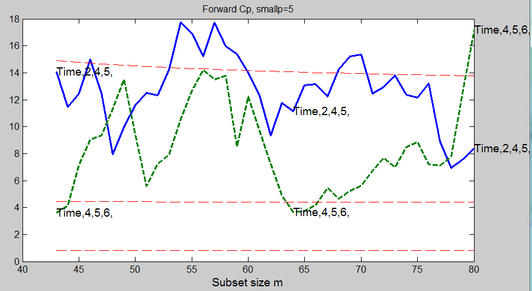

| Flexible Statistics Data Analysis Toolbox™ |
|
Cp and AIC monitoring for all models of interest of size smallp
[outCp] = FSRcp(y,X,smallp)
[outCp] = FSRcp(y,X,smallp,param1,val1,param2,val2,...)
FSRcp(y,X) gives in structure outCp Mallows Cp(m) (and eventually AIC) monitored for all specified model of size smallp
y is a vector of length n containing the response values, while X is the n-by-p-1 matrix which contains (in the columns) the values of p-1 predictive terms. smallp is a scalar which specifies the number of variables in the reduced models which will be considered
[out] = FSRcp(y,X,smallp) returns the following information
ListOut − k-by-1 vector containing the list of the units declared as outliers or NaN if the sample is considered homogeneous
MAL − n-init+1-by-k+1 matrix which contains Mallows
Cp monitored for the k considered models.
1st col = fwd search index
2nd
col = Cp monitored for first selected model
3rd
col = Cp monitored for second sel
cted model
...
(k+1)th col. = Cp monitored for k-th selected model
Remark: notice that k ≤ (n choose smallp) and that all models contain the constant
AIC − n-init+1-by-k+1 matrix which contains AIC
monitored for the k considered models.
1st col = fwd search index
2nd
col = AIC monitored for first selected model
3rd
col = AIC monitored for second selected model
...
(k+1)th col.= AIC monitored for k-th selected model
Remark: notice that k ≤ (n choose smallp), that all models contain the constant and that matrix AIC is produced only if input option aic=1
Unall − cell of dimension k. Each element of the cell contains
a (n-init)-by-11 matrix which contains the unit(s) included
in the subset at each step of the fwd search.
REMARK: in every step
the new subset is compared with the old subset. Un contains the unit(s)
present in the new subset but not in the old one for the particular considered model.
LAB − cell array of strings of length k containing the labels of the models which have been extracted. First element of LAB is associated with second column of matrix MAL...
Ajout − numeric matrix which contains the list of the models whose Cp
values are inacceptable.
The number of columns of matrix Ajout is equal to smallp
This information is useful because in this way it is
possible to skip the computation of the submodels of
the rows of matrix Ajout.
For example if smallp=3, bigP=6 and
Ajout = [ 2 3;
2 4;
2 7];
the three models 23, 24, and 27 always have Cp values
much greater than the threshold (that is variables
2,3,4,7 are considered unimportant)
[out] = FSRcp(y,X,smallp,param1,val1,param2,val2,...) specifies one or more of the name/value pairs described in the following table.
| Parameter | Value |
|---|---|
| 'intercept' |
If 1, a model with constant term will be fitted (default) else no constant term will be included. |
| 'nocheck' |
Scalar. If nocheck is equal to 1 no check is performed on matrix y and matrix X. Notice that y and X are left unchanged. In other words the additional column of ones for the intercept is not added. As default nocheck=0. |
| 'h' |
The number of observations that have determined the least trimmed squares estimator. The default value of h is [(n+smallp+1)/2] |
| 'lms' |
Scalar. If lms=1 (default) Least Median of Squares is computed, else Least trimmed squares is computed. |
| 'nomes' |
Scalar. If nomes is equal to 1 (default) no message about estimated time to compute LMS (LTS) for each considered model is displayed, else a message about estimated time is displayed. |
| 'nsamp' |
Number of subsamples which will be extracted to find the robust estimator. If nsamp=0 all subsets will be extracted. They will be (n choose p). Remark: if the number of all possible subset is smaller than 1000 the default is to extract all subsets otherwise just 1000. |
| 'init' |
Scalar which specifies the initial subset size to start monitoring the required quantities,
if init is not specified it will be set equal to
|
| 'aic' |
Scalar, scalar. If aic=1 the value of AIC is also stored in each step of the search else (default) only Mallows Cp is stored |
| 'labels' |
cell array of strings of length bigP-1 containing the
names of the explanatory variables. If labels is a missing
value the following sequence of strings will be
automatically created for X |
| 'fin_step' |
scalar specifying the portion of the search which has to be
monitored to choose the best models
If fin_step is an integer greater
or equal 1, it refers to the number of steps.
For example if fin_step=10 the program considers the last
10 steps to choose the best models.
If fin_step is a real number alpha (0 <
alpha ≤ 0.5) in the
interval (0 0.5] than the program considers the last
round(n*alpha) steps. As default fin_step=round(n*0.2)
that is the last 20% of the steps are considered.
|
| 'first_k' |
scalar which specifies the number of best models to consider in each of the last fin_step. For example if first_k=5 in each of the last fin_step, the models which had the 5 smallest values of Cp are considered. As default first_k=3. |
| 'Excl' |
Matrix which contains the models which surely do not have
to be considered. As default Excl==''
|
| 'ExclThresh' |
scalar. Exclusion threshold associated to the upper percentage point of the F distribution of Cp which defines the threshold for declaring models as unuseful. The default value of ExclThresh is 0.99999 that is the models whose minimum value of Cp in the part of the search defined by fin_step is above ExclThresh are stored in output matrix outCp.Ajout. Notice that ExclThresh must be smaller than 1 |
| 'labout' |
scalar. If labout=1 the output structure contains a cell array of string named LABOUT which contains the list of the models whose Cp values are inacceptable else (default) no model is created. |
| 'plots' |
scalar. |
|
Remark: the options below only work if plots=1 |
|
| 'quant' |
vector which specifies the quantiles which are used to produce Cp envelopes (the elements of quant are numbers between 0 and 1). The default value of quant is quant=[0.025 0.5 0.975] |
| 'steps' |
vector which specifies in which steps of the plot which
monitors Cp (AIC) it is
necessary to include the labels of the models which have been
previously chosen. The default is to write the labels of
the models in steps round([n*0.5 n*0.8 n]);.
|
| 'titl' |
A label for the title (default: 'Forward Cp when smallp=smallp'). |
| 'labx' |
A label for the x-axis (default: 'Subset size m') |
| 'laby' |
A label for the y-axis (default: ''). |
| 'xlimx' |
Vector with two elements controlling minimum and maximum on the x axis. Default value is '' (automatic scale). |
| 'ylimy' |
Vector with two elements controlling minimum and maximum on the x axis. Default value is '' (automatic scale) |
| 'lwd' |
Scalar which controls line width of the trajectories of residuals. Default line width=0.5. |
| 'lwdenv' |
Scalar which controls the width of the lines associated with the envelopes. Default is lwdenv=1 |
| 'FontSize' |
Scalar which controls the font size of the labels of the axes. Default value is 12. |
| 'SizeAxesNum' | Scalar which controls the size of the numbers of the axes. Default value is 10. |
| 'selunitcolor' |
cell containing the colors to be used for the trajectories associated
with the units in selunit. If length(selunitcolor)==1 the same color will
be used for all units in vector selunit |
| 'selunittype' |
cell containing the line type of the curves |
% Load Ozone data (reduced set)
X=load('ozone.txt');
% Transform the response using logs
X(:,end)=log(X(:,end));
% Add a time trend
X=[(-40:39)' X];
% Define y
y=X(:,end);
% Define X
X=X(:,1:end-1);
% Extract the best models of size 4 and show the plot of Cp
% All the default options are used therefore the plot of Cp and the
% output matrix Cpmon.MAL only contains the searches associated with the
% smallest 3 values of Cp in the last 16 steps of the search
smallp=4;
labels={'Time','1','2','3','4','5','6','7','8'};
[Cpmon]=FSRcp(y,X,smallp,'plots',1,'labels',labels);
The monitoring of the trajectories of Cp produces the following plot
Clearly the plot becomes unreadable when there are a lot of trajectories. In order to solve this problem it is necessary to produce the candle stick plot.

smallp=6;
labels={'Time','1','2','3','4','5','6','7','8'};
[Cpmon6]=FSRcp(y,X,smallp,'nsamp',1000,'plots',1,'labels',labels);
smallp=5;
[Cpmon5]=FSRcp(y,X,smallp,'nsamp',1000,'Excl',Cpmon6.Ajout,'plots',1,'labels',labels);
The plot below shows all the trajectories which have been selected when smallp=6.

The plot below shows the selected trajectories for smallp=5 after excluding the models contained in those considered unuseful for smallp=6

|
|
fsrcore.html | fsreda.html |
|